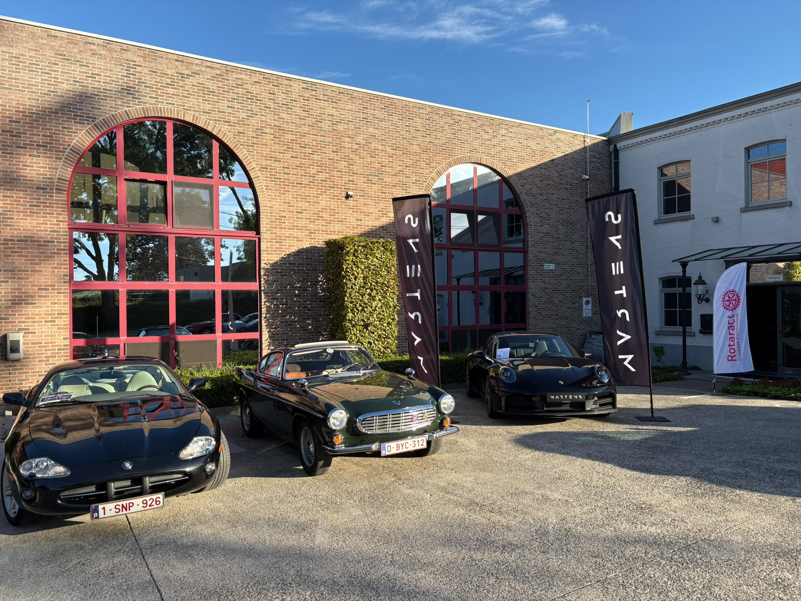
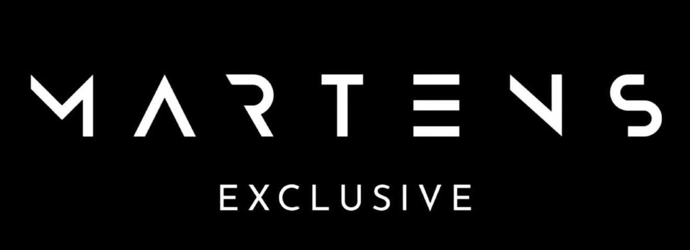

Terugblik · 6 september 2026
RAC GP. Bedankt!
De rally zit erop. Bedankt aan alle deelnemers, sponsors en helpers voor een mooie dag vol bijzondere wagens, fijne ontmoetingen en steun voor het goede doel.
Hoofdsponsors
Dank aan Lindemans, Home Masters en Martens Exclusive.
Met dank aan onze hoofdsponsors voor hun steun aan RAC GP en het goede doel achter deze rally.
Familiale lambiekbrouwerij uit Vlezenbeek, sinds 1822 bekend om authentieke lambiek en spontane gisting.
Bezoek LindemansPersoonlijk woonadvies voor wie twijfelt.
Verhuizen, (energiezuinig) verbouwen, tweede verblijf, anders wonen?

Specialist in premium en exclusieve wagens, met aanbod, zoekservice en stijlvolle car storage.
Bezoek Martens ExclusiveDe eerste beelden
Nog even nagenieten.
Een eerste selectie sfeerfoto’s van RAC GP 2026. De foto’s van de fotografen volgen later en voegen we hier toe zodra ze beschikbaar zijn.
{kind=link}
{kind=link}
{kind=link}
{kind=link}
{kind=link}
{kind=link}
Goed doel
Samen voor het internaatsfonds.
Alle winst van RAC GP gaat integraal naar een internaatsfonds, in samenwerking met het Sint-Jozefscollege Aalst. Dat fonds helpt de financiële drempel verlagen voor kinderen die baat hebben bij structuur, begeleiding en een stabiele omgeving.
RAC GP 2026 is afgesloten
Nog een vraag na de rally?
Nieuwe rallyaanvragen en BBQ-tickets zijn niet meer mogelijk. Heb je een vraag over je deelname? Neem gerust contact met ons op.
Neem contact op